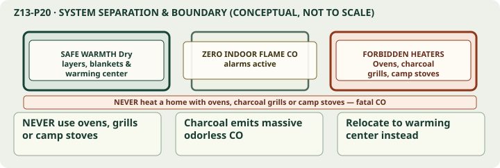

Z13-P20 · Home survival and utilities · New manuscript
Never heat a home with kitchen ovens, charcoal grills, or camp stoves
Enforce an absolute life-safety barrier against deadly improvised indoor combustion during winter power or furnace failures.
When it applies · Homes, apartments, mobile homes, and cabins experiencing furnace or electrical outages.
Equipment · Working CO/smoke alarms, non-combustion insulation layers, and warming-center evacuation plan.

Actions
- NEVER turn on a gas or electric kitchen oven or stovetop burners to heat a living space—gas ovens generate silent lethal carbon monoxide and burn hazards, while open oven doors cause severe fire and child-scald injuries.[C22, U03, C16, C05]
- NEVER bring charcoal grills, hibachis, camp stoves, propane turkey fryers, or patio heaters indoors, into attached garages, or onto enclosed porches—glowing charcoal produces massive lethal carbon monoxide even without visible smoke.[C22, C16, C05]
- When home heating fails and indoor insulation cannot maintain safe temperatures, relocate early to a public warming center, hotel, or powered friend/relative rather than improvising indoor combustion.[U25, U17, U10]
Failure recognition · Bringing a glowing charcoal kettle grill into a living room during an ice storm to warm children, killing occupants silently while they sleep.[C16, C05]
Verify · Confirm zero ovens, ranges, grills, or camp stoves are used for space heating and household evacuation warming options are ready.[U03, C16, U17]
Stop or change course · Any headache, dizziness, nausea, or CO alarm activation near an indoor fuel source demands instant outdoor evacuation and 911 activation.[C07, C16]
Evidence and editorial notes
- C05 · CPSC · Portable Heaters and Camping Equipment (current web edition)
- Section: Carbon monoxide poisoning from portable camping equipment · Conditions: Tents, campers, vehicles and other enclosed spaces
Support: Fuel-burning camping equipment can lead to fatal carbon monoxide buildup in enclosed spaces.
Limitations: High altitude increases incomplete combustion and CO production. · Conflicting evidence: None; aligns with CDC-CO and NPS guidance.
Editorial note: Hard-stop prohibition against indoor/vestibule/tent combustion. · Specialist reviewer: Carbon monoxide safety and emergency medicine
Primary source · checked 2026-11-24 - C07 · CPSC · Carbon Monoxide Fact Sheet (current web edition)
- Section: CO poisoning symptoms; what to do if suspected · Conditions: Suspected carbon monoxide exposure
Support: Escape to fresh air immediately and contact emergency services. Symptoms can include headache, dizziness, nausea and confusion.
Limitations: CO is colorless and odorless; symptoms mimic viral illness or altitude fatigue and can incapacitate sleepers without waking. · Conflicting evidence: None; aligns with CDC-CO.
Editorial note: Standard CO emergency stop condition across Z02 and Z03. · Specialist reviewer: Carbon monoxide safety and emergency medicine
Primary source · checked 2026-11-24 - C16 · CDC · Carbon Monoxide Poisoning Basics (current web edition)
- Section: Carbon Monoxide Poisoning Basics > Sources and Prevention · Conditions: Any enclosed or semi-enclosed structure, garage, porch, tent, or vehicle
Support: Never burn charcoal, operate camp stoves, or run fuel-burning heaters inside homes, garages, tents, or vehicles even with doors or windows partly open.
Limitations: Vent cracks and open garage doors do not prevent lethal CO accumulation. · Conflicting evidence: Refutes dangerous myth that cracking a tent vent or garage door makes indoor combustion safe.
Editorial note: Hard-stop rule across all Z02 ventilation and Z03 combustion cards. · Specialist reviewer: Carbon monoxide safety and emergency medicine
Primary source · checked 2026-11-24 - C22 · CPSC · Carbon Monoxide Questions and Answers (current web edition)
- Section: Carbon Monoxide Questions and Answers: CO alarm installation and maintenance; fuel-burning equipment indoors · Conditions: Home CO alarms and improvised indoor heat
Support: Install battery-operated or battery-backup CO alarms on every level and outside sleeping areas, not in kitchens, above fuel-burning appliances or near heating vents; the test button checks circuitry, not sensor accuracy; alarms have a recommended replacement age from the manufacturer. Never use gas ranges, ovens or clothes dryers to heat a home; never burn charcoal inside a home, garage, vehicle or tent; never use portable fuel-burning camping equipment indoors unless it is designed for enclosed spaces.
Limitations: No fixed alarm lifespan; follow manufacturer instructions. · Conflicting evidence: The CO-alarm lifespan in years on Z13-P56 is not on this page.
Editorial note: Grounds Z13-P56 placement and the Z13-P20 indoor-heat prohibitions. · Specialist reviewer: Fire prevention and carbon monoxide safety
Primary source · checked 2026-11-25 - U03 · NFPA · Heating Fire Safety (current web edition)
- Section: Heating Equipment Safety > Space Heaters, Fireplaces, and Clearances · Conditions: Residential winter heating and supplemental backup heating
Support: Maintain at least a 3-foot clearance between anything flammable and any heating source (space heaters, fireplaces, wood stoves), inspect chimneys annually, use only the fuel specified by the heater manufacturer, and never use kitchen ovens to heat homes.
Limitations: Unvented fuel-burning heaters also create severe carbon monoxide and indoor air hazards; local building codes govern installations. · Conflicting evidence: None; aligns with CPSC-C and READY-HOME-F.
Editorial note: Grounds safe supplemental heating clearances and stop boundaries in Z13. · Specialist reviewer: Fire safety and licensed HVAC trades
Primary source · checked 2026-11-24 - U10 · FEMA / Ready.gov · Winter Weather (current web edition)
- Section: Winter Household Resilience > Frozen Pipes, Ice Dams, and Heating Loss · Conditions: Sub-zero Upper Midwest winter outages and prolonged cold snaps
Support: Prevent burst pipes by insulating exposed lines, keeping cabinet doors open, shutting off and draining water lines per plumbing guidance if indoor temperatures drop toward freezing, and consolidating household occupants into one safe insulated interior room.
Limitations: Draining hydronic boilers or gas water heaters requires exact manufacturer/plumber steps to prevent equipment damage or gas leaks. · Conflicting evidence: None; regionalizes winter home defense for Minnesota conditions.
Editorial note: Anchors winter pipe protection, thermal-zone consolidation, and abandonment thresholds. · Specialist reviewer: Residential plumbing, HVAC, and cold-weather emergency management
Primary source · checked 2026-11-24 - U17 · FEMA / Ready.gov · Evacuation (current web edition)
- Section: Household Evacuation Thresholds When Utilities Fail · Conditions: Uninhabitable indoor temperatures, sewage backup, persistent CO alarm, or structural/utility hazard
Support: Establish clear pre-agreed exit triggers to relocate to a warming center, hotel, or relatives BEFORE indoor freezing, carbon monoxide alarms, medical-device battery exhaustion, or impassable blizzard roads trap occupants.
Limitations: Waiting until indoor pipes burst or batteries hit zero removes safe travel options. · Conflicting evidence: None; aligns with T13 and E14.
Editorial note: Defines objective household abandonment thresholds in Z13. · Specialist reviewer: Emergency management and cold-weather operations
Primary source · checked 2026-11-24 - U25 · FEMA / Ready.gov · Power Outages (current web edition)
- Section: Power Outages: safety tips on generators, carbon monoxide, food, surges and extreme temperatures · Conditions: Household power outages
Support: Use generators, camp stoves and charcoal grills only outdoors and at least 20 feet from windows, doors and attached garages; do not use a gas stove or oven to heat a home; install CO detectors on every level; keep the refrigerator and freezer closed (refrigerator about 4 hours, full freezer about 48 hours); disconnect appliances and electronics against surges; go to a community location with power if heat or cold is extreme.
Limitations: General guidance; the page does not mention candles. Generator connections follow the manual and licensed electricians. · Conflicting evidence: None.
Editorial note: Grounds the Z15-P43 layout and the Z13-P20 relocation step. · Specialist reviewer: Emergency management and electrical/CO safety
Primary source · checked 2026-11-24
Source lineage · CPSC Carbon Monoxide and NFPA Heating Safety; new manuscript · Classification · New manuscript.